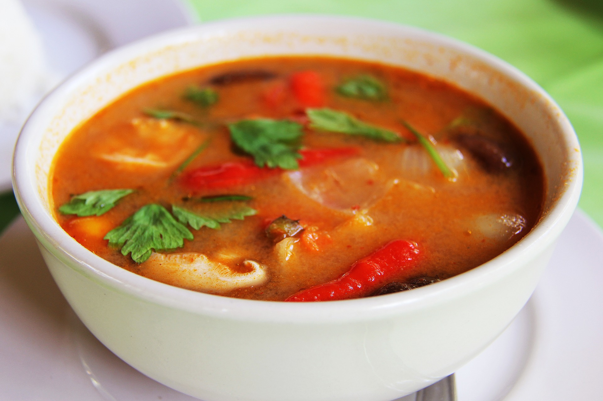

DE
Asiatische Gerichte

Pho ist eine traditionelles Suppengericht aus Vietnam. Der Name
könnte eine Anlehnung an das französische Gericht Pot-au-feu sein.
Es ist traditionell eine kräftige Brühe mit Reisnudeln und Rindfleisch-
scheiben, welche in einer Schüssel serviert wird.
https://pixabay.com/de/lebensmittel-nudeln-suppe-pho-1246621/
Frühlingsrollen werden traditionell als Vorspeise in vielen
asiatischen Ländern serviert. Darunter China, Vietnam, Singapur,
Korea usw. Es sind im Wok bearbeitete Teigblätter, welche die
unterschiedlichsten Füllungen haben können.
https://pixabay.com/de/fr%C3%BChlingsrollen-knusprig-gebraten-2536526/
Udon ist eine traditionelle Form der Nudelsuppe in Japan.
Sie besteht aus besonders dicken Nudeln und lässt sehr
viel Spielraum für Anpassungsmöglichkeiten. Sie wird aus
Wasser, Weizenmehl und Speisesalz gemacht. Sie ist nicht zu
verwechseln mit Ramen, welche als traditionelles Nudelsuppen-
gericht Chinas gilt.
https://pixabay.com/de/japanisches-essen-japan-essen-2199963/

Green Curry ist eine Thailändische Spezialität und
wird dort Gaeng Kiao Wan genannt. Übersetzt heißt es
so viel wie "grünes, süßes Curry", jedoch ist es eigentlich
nicht wirklich süß. Die Farbe kommt aus den Zutaten der
Curry-Paste. Es wird meist in einer Schüssel serviert und
da es sich einer großen Beliebtheit erfreut, bekommt man es
fast überall.
https://pixabay.com/de/thai-curry-gr%C3%BCnes-curry-curry-chili-1736806/